Speech Denoising with FlowSE
text: 这个夜晚上去千百年,下来也千百年,甚至更长更久的夜晚。
clean_1.wav
mix_1.wav
enhanced_1.wav
enhanced_wotext_1.wav
 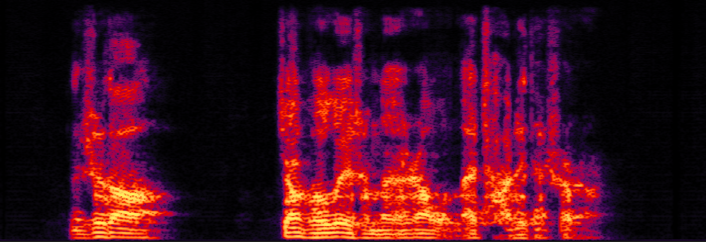
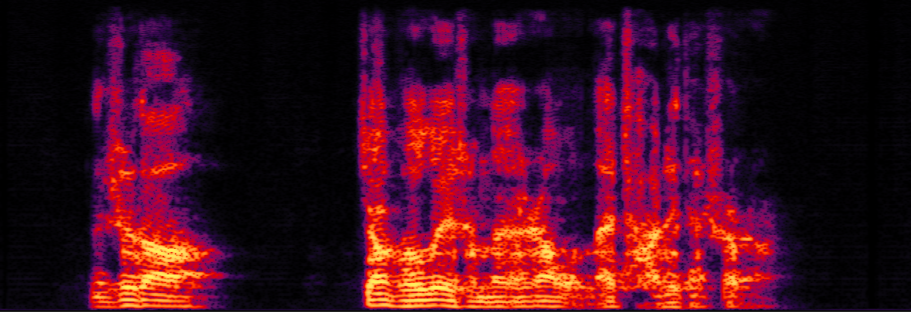
text: 你知道江河为什么让我来查这件事吗？
clean_2.wav
mix_2.wav
enhanced_2.wav
enhanced_wotext_2.wav


text: 而且啊大学生大部分人都是父母给钱嘛，父母来给你生活费。
clean_3.wav
mix_3.wav
enhanced_3.wav
enhanced_wotext_3.wav
text: 一年后的二零一八年，柯某又向四家商户多次购买未经检疫的冻肉，总共花费三十八万多元。
clean_4.wav
mix_4.wav
enhanced_4.wav
enhanced_wotext_4.wav
 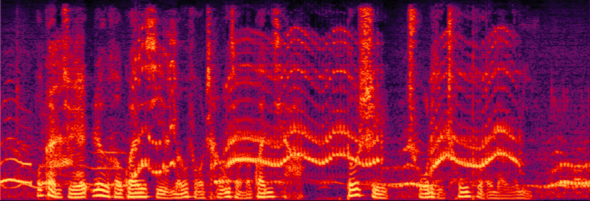
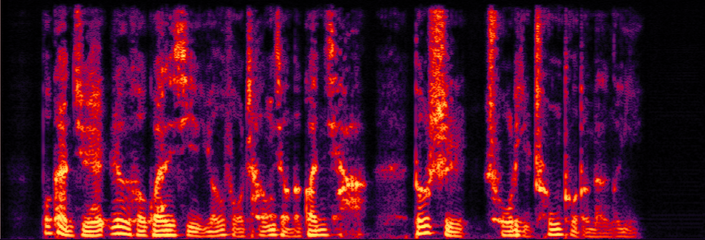
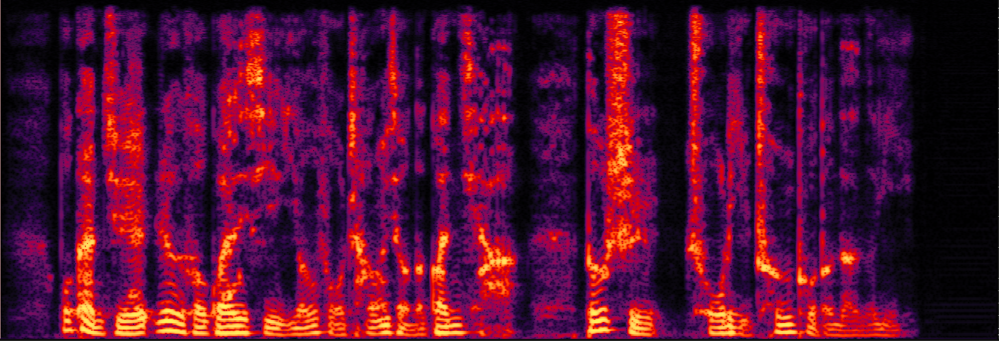
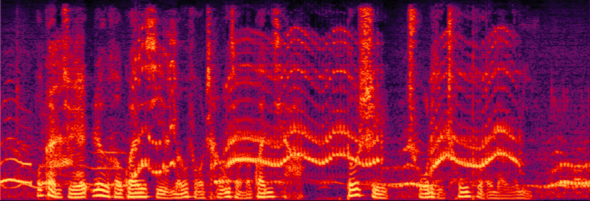
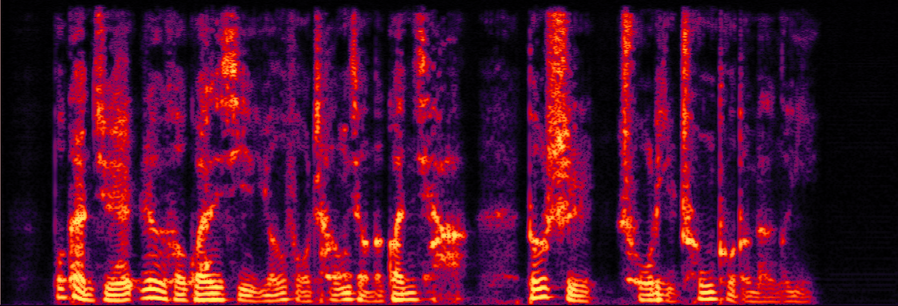
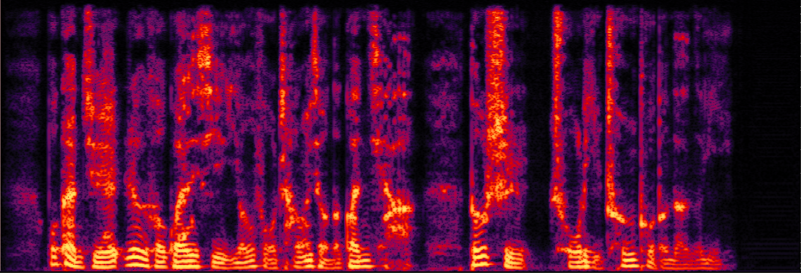
text: 我感觉任何关系能否长久的关卡都是处理冲突的能力。
clean_5.wav
mix_5.wav
enhanced_5.wav
enhanced_wotext_5.wav
text: 四、慎重用药。很多药物对胃粘膜都有刺激作用。如糖皮质激素含利血平的降压药，需严格按照医嘱服用。
clean_6.wav
mix_6.wav
enhanced_6.wav
enhanced_wotext_6.wav
 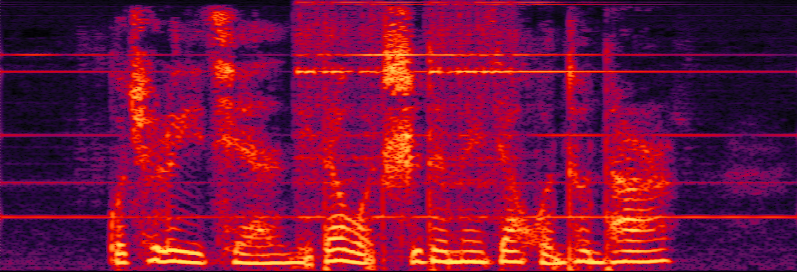
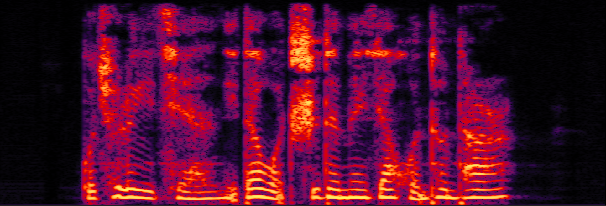
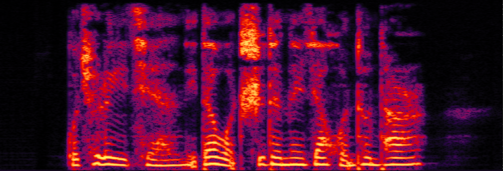
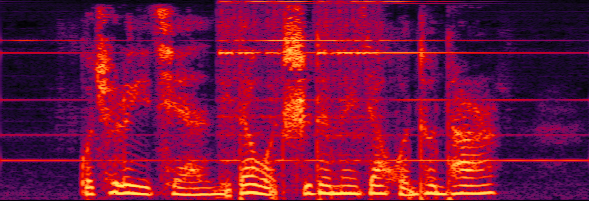
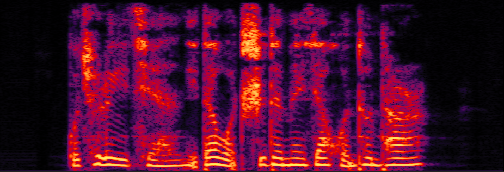
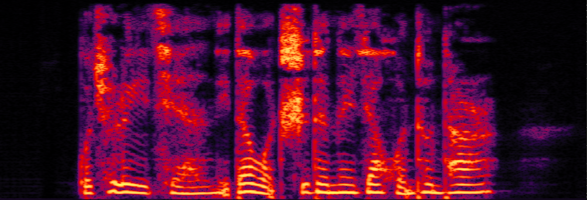
text: 我去了以前你带我吃的那家馄饨摊儿。
clean_7.wav
mix_7.wav
enhanced_7.wav
enhanced_wotext_7.wav
text: The british taxes, which bear hardest on manufactures, are some duties upon the importation of raw materials, particularly upon that of raw silk.
clean_8.wav
mix_8.wav
enhanced_8.wav
enhanced_wotext_8.wav
 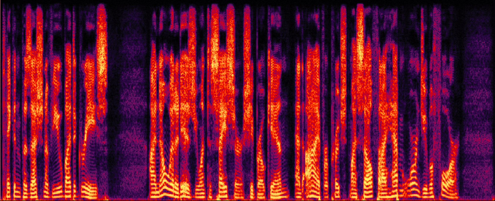
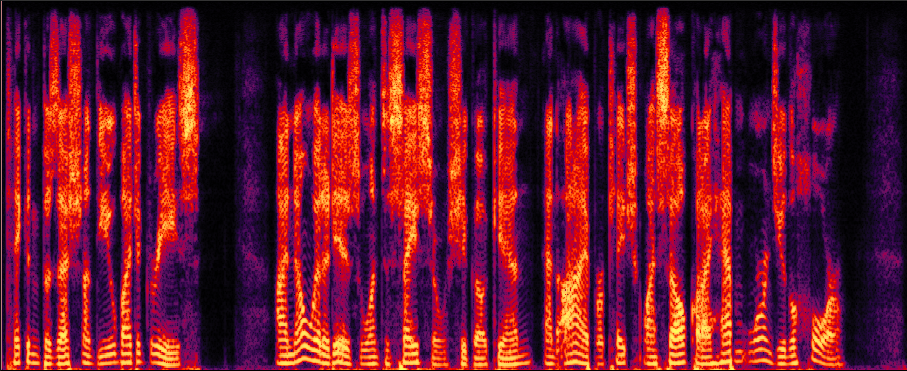
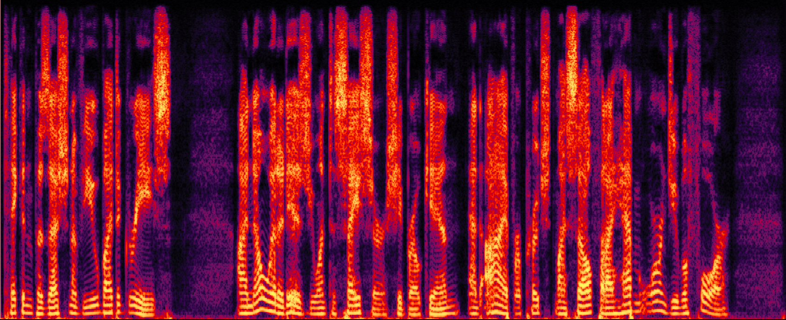
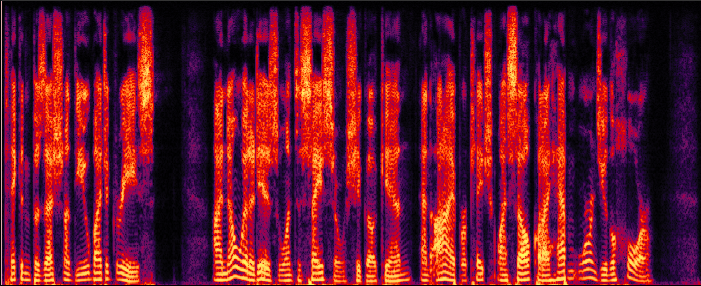
text: Taken positions of view by degrees,I know what it is, you want to say, sir, she broke in. And i've approached myself that i haven't warned you before.
clean_9.wav
mix_9.wav
enhanced_9.wav
enhanced_wotext_9.wav
text: I wanted to win,so already, i wanted to win,so already. It was an accounting air. It was an accounting air.
clean_10.wav
mix_10.wav
enhanced_10.wav
enhanced_wotext_10.wav
text: With motal pains. The mines become its food and sacrifices sabbath womman things
clean_11.wav
mix_11.wav
enhanced_11.wav
enhanced_wotext_11.wav
text: All were set in this type and printed in this house, I found the full collection Volume bound in a dealer's list the other day
clean_12.wav
mix_12.wav
enhanced_12.wav
enhanced_wotext_12.wav